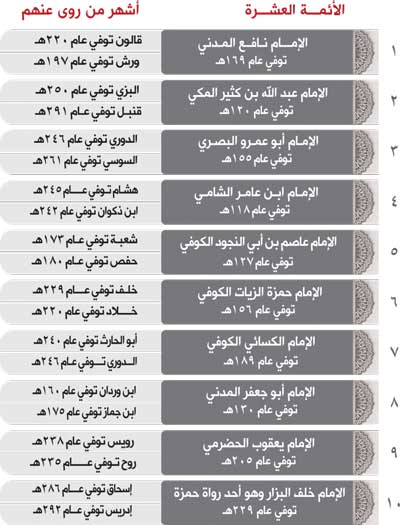

أبرز المصطلحات في علم القراءات هي ما يلي:
أجمع العلماء على أن القراءة لا تعتبر قرءانًا إلا إذا توفرت فيها أركان القراءة الصحية الثلاثة التالية:
موافقة القراءة لوجه من وجوه النحو ولو كان هذا الوجه ضعيفًا، سواء كان فصيحًا أم أفصح، مجمعًا عليه أو مختلفًا فيه.
مثاله: قوله تعالى: ﴿فَتَلَقَّىٰٓ ءَادَمُ مِن رَّبِّهِۦ كَلِمَٰتٖ فَتَابَ عَلَيۡهِۚ إِنَّهُۥ هُوَ ٱلتَّوَّابُ ٱلرَّحِيمُ﴾ [البقرة: 37]، فقد قُرئ بنصب ﴿ءَادَمُ﴾ على أنها مفعول به، ورفع ﴿كَلِمَٰتٖ﴾ على أنها فاعلٌ، وعلى هذا الوجه تكونُ الكلماتُ هي التي تلقت آدمَ، وهذا من بلاغةِ القرءان الكريم.
موافقة القراءة للرسم العثماني ولو احتمالاً، نحو قوله تعالى: ﴿مَٰلِكِ يَوۡمِ ٱلدِّينِ﴾ [الفاتحة: 4]، قُرئ لفظ ﴿مَٰلِكِ﴾ بإثبات الألف (مالك) وقرئ بحذفها (ملك)، ورسمُ المصحف يحتمل القراءتين لأن لفظ ﴿مَٰلِكِ﴾ كتب في جميع المصاحف بغير ألف اختصارًا.
صحَّةُ السند وهو نقل الضابط العدل عن مثله إلى النبي صلى الله عليه وسلم من غير شذوذ ولا علة.
قال ابن الجزري في طيِّبةِ النشر:
فَكُـلُّ مَا وَافَقَ وَجْهَ نَحْوِ
وَكَانَ لِلرَّسْمِ احْتِمَالاً يَحْوِي
وَصَـحَّ إسْنادًا هُوَ الْقُرآنُ
فَهَـذِهِ الثَّلاثَـةُ الأَرْكَانُ
وحَيثُما يَخْتَلَّ رُكْنٌ أَثْبـِتِ
شُـذُوذَهُ لَوْ أنَّهُ فِي السَّبعَةِ
وقال أَبو حَيَّان الأندلسيُّ:
مَـنْ يَـأخُذِ العِلْمَ عَـنْ شَيـخٍ مُـشافَـهَةً
يَـكُنْ مِنَ الزَّيغِ والتَّحْريفِ فِي حَرَمِ
ومَـنْ يَـكُنْ آخِـذًا لِلْعِلْمِ عَـنْ صُـحُـفٍ
فَـعِـلْـمُـهُ عِـنْـدَ أَهْلِ العِلْمِ كَالعَـدَمِ
أرسل عثمان بن عفان رضي الله عنه مصحفًا من المصاحف العثمانية إلى كل مصر من أمصار المسلمين مع قارئ متقن يُقرئ الناس بما يوافق رسم المصحف المرسل إليهم، وكان يتخير لكل قارئ المصحف الذي يوافق قراءته، فكان:
أقرأ القراءُ الناس القرءان بما يوافق رسم المصحف المرسل إليهم، وأقرأ تلاميذهم غيرهم، وانصرف قوم للاعتناء بالقرءان، وقاموا بضبطه، وانشغلوا بحفظه، وتفرغوا لإقرائه وتعليمه حتى أصبحوا في ذلك أئمة يقتدى بهم، ويُرحل إليهم، ويُؤخذ عنهم.
وبعد زمن كثر القراء، وتفاوتوا في الضبط والاتقان، فكان منهم المتقن للتلاوة المشهور بالرواية والدراية، ومنهم غير ذلك، وكثر بينهم الخلاف وقل الضبط، وأصبح البعض يقرأ بما يوافق رسم المصحف ما لم يصلنا عن رسول الله صلى الله عليه وسلم، فأراد الناس في العصر الرابع أن يقتصروا من القراءات ما تحققت فيها شروط القراءة الصحيحة، وما يسهل حفظه، وتنضبط القراءة به.
يقول الدمياطي : ” … ليعلم أن السبب الداعي إلى أخذ القراءة عن القراء المشهورين دون غيرهم أنه لما كثر الاختلاف فيما يحتمله رسم المصاحف العثمانية التي وجه بها عثمان رضي الله عنه إلى الأمصار فصار أهل البدع والأهواء يقرؤون بما لا يحل تلاوته وفاقاً لبدعتهم، أجمع رأي المسلمين أن يتفقوا على قراءات أئمة ثقات تجردوا للاعتناء بشأن القرءان العظيم فاختاروا من كل مصرٍ به مصحف عثماني أئمة مشهورين بالثقة والأمانة في النقل وحسن الدراية وكمال العلم، أفنوا أعمارهم في القراءة والإقراء، واشتهر أمهرهم، وأجمع أهل مصرهم على عدالتهم، ولم تخرج قراءتهم عن خط مصحفهم”
في هذا الإطار ألف شيخ القراء في عصره الإمام أبو بكر أحمد بن موسى بن مجاهد كتابه في القراءات (كتاب السبعة)، اختار فيه من القراءات ما وافق خط المصحف، ومن القراء إمامًا من كل مصر مشهور بالثقة والأمانة في النقل وحسن الدين، وكمال العلم، قد طال عمره واشتهر أمره بالثقة، وأجمع أهل مصره على عدالته فيما نقل، وثقته فيما قرأ وروى، وعِلمه بما يقرأ؛ فكان: أبو عمرو من أهل البصرة، وحمزة وعاصم والكسائي من أهل الكوفة، وابن كثير من أهل مكة، وابن عامر من أهل الشام، ونافع من أهل المدينة، وبهذا كان أبو بكر بن مجاهد أول من اقتصر القراء على هؤلاء السبعة وتلقت الأمة هذا الحصر بالقبول.
قال الخاقاني في رائيته:
وإِنَّ لَنَا أَخْذَ القِرَاءَةِ سُنَّـةً
عَنْ الأَوَّلِيـنَ المُقْرِئِينَ ذَوِى السِّتْرِ
فَلِلسَّبْعَـةِ القُـرْاءِ حَقٌّ عَلَى الوَرَى
لإِقْرَائِهِـمْ قُـرْآنَ رَبِّهُمُ لِلْوِتْرِ
فَبِالْحَرَمَيْنِ ابْـنُ الكَثِيـرِ وَنَافِـعُ
وَبِالْبَصْرَةِ ابْنُ الْعَلاءِ أُبُو عَمْـرِو
وَبِالشَّـامِ عَبْدُ اللهِ وَهوَ ابْنُ عَامِرٍ
وَعَاصِمٌ الْكُوفِيُّ وَهْوَ أَبُو بَكْـرِ
وَحَمْزَةُ أَيْضَاً وَالْكِسَائِيُّ بَعْـدَه
أَخُو الْحِـذْقِ بِالقُرْانِ وَالنَّحْوِ وَالشِّعْرِ
ولقد نظم الإمام أبو محمد القاسم بن فيره بن خلف الشاطبي هذه القراءات السبع في منظومة أسماها (حـرز الأماني ووجـه التهاني) اشتهرت بـ (الشاطبية) نسبة له.
علق في أذهان كثير من الناس أن الأحرف السبعة التي نزل بها القرءان والتي ورد ذكرها في العديد من الأحاديث منها: "القُرآنُ نزَلَ على سَبعةِ أحرُفٍ، على أيِّ حَرفٍ قَرَأْتم، فقد أصَبْتم، فلا تَتَمارَوْا فيه؛ فإنَّ المِراءَ فيه كُفرٌ" [أحمد: 17819] هي القراءات السبعة التي اختارها ابن مجاهد، وهذا الوهم دفع عدد من العلماء للتأليف في القراءات ومن بين هؤلاء شيخ المحققين والقراء الإمام محمد بن الجزري الذي تتبع أسانيد القراءات حتى زمانه فوجد ثلاث قراءات تشارك السبع في الشهرة والثبوت وتحقق أركان القراءة الصحيحة فأضافها للقراءات السبع وتلقت الأمة هذه الإضافة بالقبول.
ولقد نظم الإمام بن الجزري هذه القراءات الثلاث في قصيدة سماها (الدرة) وأخبر بأنها متممة لمنظومة الإمام الشاطبي (حـرز الأماني ووجـه التهاني)، بحيث تصبح الشاطبية مع الدرة جامعتين للقراءات العشر، كما جمع الإمام ابن الجزري القراءات العشر في كتاب أسماه (النشر في القراءات العشر) وفي منظومته (طيبة النشر في القراءات العشر).
أجمعت الأمة على أن الأحرف السبعة ليس المراد بها القراءات السبع وذلك لأن القراءات السبع وتحديدها جاء متأخراً عن نزول القرءان الكريم بالأحرف السبع. إلا ان العلماء اختلفوا في صلة القراءات بالأحرف السبعة، والراجح هو قول مكي بن أي طالب وابن الجزري بأن القراءات التي يقرأ بها الناس والتي صحت روايتها عن الأئمة (القراءات العشر) إنما هي جزء من الأحرف السبعة التي نزل بها القرءان الكريم ووافق اللفظ بها خط المصاحف العثمانية التي كتبت على حرف واحد (حرف قريش) لوأد الخلاف الذي حدث بين المسلمين في عهد عثمان رضي الله عنه، إلا أنها مشتملة على ما يحتمله رسمها من الأحرف السبعة لخلوها من النقط والشكل.
تنقسم القراءات إلى الأنواع التالية:
هي القراءة التي وافقت العربية ورسم المصحف ونقلها جمعٌ لا يمكن تواطؤهم على الكذب عن مثلهم بالسند المتصل بالرسول صلى الله عليه وسلم.
مثاله: القراءات العشر.
هي القراءة المتصل سندها بالرسول صلى الله عليه وسلم، ووافقت العربية ورسم المصحف، واشتهرت عند القراء فلم يعدوها من الغلط ولا من الشذوذ إلا أنها لم تبلغ درجة المتواتر.
مثاله: قوله تعالى: ﴿وَمَا كُنتُ مُتَّخِذَ ٱلۡمُضِلِّينَ عَضُدٗا﴾ [الكهف: 51]، بفتح تاء (كنت)، وكلتا القراءتين للقاررئ أبي جعفر المدني.
هي القراءة المتصل سندها بالرسول صلى الله عليه وسلم، وخالفت العربية أو رسم المصحف أو كليهما، أو لم تشتهر اشتهار ما ذكر.
مثاله:
هي القراءة التي لم يصح سندها أو لا وجه لها في العربية أو خالفت الرسم.
مثاله: قوله تعالى: ﴿فَٱلۡيَوۡمَ نُنَجِّيكَ بِبَدَنِكَ لِتَكُونَ لِمَنۡ خَلۡفَكَ ءَايَةٗۚ﴾ [يونس: 92]، حيث نُقل عن ابن السميفع وأبي السمال قراءتها (ننحيك) بالحاء.
هي القراءة التي نسبت إلى قائلها من غير أصل أو سند.
مثاله: قوله تعالى: ﴿إِنَّما يَخْشَى اللَّهَ مِنْ عِبادِهِ الْعُلَماءُ﴾ [فاطر: 28]، نسبت افتراءً على أبي حنيفة برفع لفظ الجلالة (اللهُ) ونصب العلماء (العلماءَ).
وهي الكلمة أو العبارة التي زيدت في الآي القرءاني على وجه التفسير.
مثاله: قوله تعالى: ﴿وَلَهُۥٓ أَخٌ أَوۡ أُخۡتٞ فَلِكُلِّ وَٰحِدٖ مِّنۡهُمَا ٱلسُّدُسُۚ﴾ [النساء: 12]، حيث قرأها سعد بن ابي وقاص: (وله أخ أو اخت من أم) بزيادة لفظ (من أم)، وهذا النوع لا يعتبر قرآناً يتلى وإنما هو تفسير كما نص عليه جل العلماء.
وضع علماء القراءات ضوابط لقبول القراءات وردها، وهي أركان القراءة الصحية التالية:
قالُ ابن الجزريِّ في طيِّبةِ النشر:
فَكُلُّ مَا وَافَقَ وَجْهَ نَحْـوِ
وَكَانَ لِلرَّسْمِ احْتِمَالاً يَحْوِي
وَصَحَّ إسْنادًا هُوَ الْقُـرآنُ
فَهَـذِهِ الثَّلاثَـةُ الأَرْكَانُ
وحَيثُما يَخْتَلَّ رُكْنٌ أَثْبِتِ
شُذُوذَهُ لَوْ أنَّهُ فِي السَّبعَة
قال بن الجزري في كتابه النشر: "كل قراءة وافقت العربية ولو بوجه، ووافقت أحد المصاحف العثمانية ولو احتمالاً، وصح سندها، فهي القراءة الصحيحة التي لا يجوز ردها ولا يحل إنكارها، بل هي من الأحرف السبعة التي نزل بها القرآن، ووجب على الناس قبولها، سواء كانت، عن الأئمة السبعة، أم عن العشرة أم عن غيرهم من الأئمة المقبولين، ومتى اختل ركن من هذه الأركان الثلاثة أطلق عليها ضعيفة أو شاذة أو باطلة، سواء كانت عن السبعة أم عمن هو أكبر منهم".
بهذا تكون كل قراءة صح سندها إلى الرسول صلى الله عليه وسلم، وكانت موافقة للغة العربية ورسم أحد المصاحف العثمانية قراءة مقبولة ولو كانت غير متواترة. وعليه تنقسم القراءات من جهة القبول إلى:
هي التي اجتمعت فيها أركان القراءة الصحيحة وتنقسم إلى:
وهذه القراءات المقبولة يجب على كل مسلم اعتقاد قرآنيتها، يُقرأ بها تعبدًا في الصلوات وخارجها، ويكفر جاحد حرف منها.
هي التي لم تجتمع فيها أركان القراءة الصحيحة أي القراءة التي وافقت الرسم وخالفت العربية، أو التي خالفت الرسم ووافقت العربية أو التي لا سند لها أو لم يصح سندها. وهذا يشمل الأقسام التالية:
وهذه القراءات المردودة لا يجوز اعتقاد قرآنيتها، ولا تجوز القراءة بها تعبدًا، ويجب تعزير من أصر على قراءتها تعبدًا وإقراءً.
تنبيه: اختلف العلماء في أقسام القراءات ومصطلحاتها وأحكامها، ولقد ذكرنا الراجح لدينا والله أعلم.

من أشهر المؤلفات التي جُمعت بها القراءات هي:
مع مرور الزمن انتشرت بعض القراءات دون غيرها وذلك للأسباب التالية:
من أشهر القراءات التي يقرأ بها عامة الناس في عصرنا الحالي ما يلي:
تنبيه: ما عدا هذه القراءات لا يقرأ بها عامة الناس بل يتم تداولها بين أهل العلم والقراء.
مع مرور الزمن انتشرت بعض الروايات دون غيرها وذلك للأسباب التالية:
من الروايات التي يقرأ بها عامة الناس في عصرنا الحالي ما يلي:
تنبيه: ما عدا هذه الروايات لا يقرأ بها عامة الناس بل يتم تداولها بين أهل العلم والقراء.